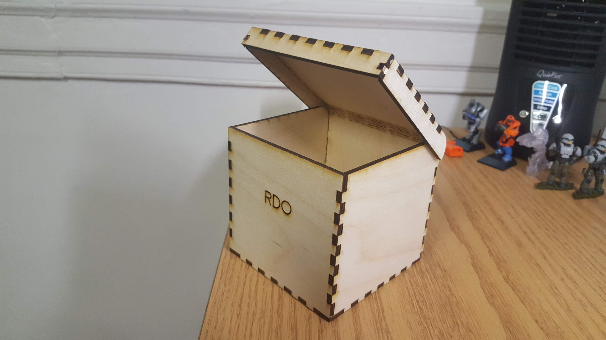

Laser cutting is a process in which a laser is used to cut or engrave materials, in the case of our Glowforge, essentially exclusively plywood. The Laser, as one would expect, burns through the wood preciscely as the design file indicates, making it excellent for projects that require exact measurments.
Making a design for use with the laser cutter is relatively simple. The Glowforge program takes the .svg file format, so it is necessary to export your deisgn as such. Once on the Glowforge website, you click open from file, and select your design. It will then overlay your design onto a image scan of the cut bed. you can use this to move and scale your design to fit on your material. Selecting different shapes in your design, you cna change the type of cut in the bar on the left side. Options include cut, which will unsurprisingly cut through the material, engrave, which will cut slightly into the material, good for writing or designs, among other options.


Once the design is squared away, you're almost ready to print! First though, make sure the air filter on the floor next to the Glowforge is turned on. This is extremely important as it sucks the smoke out of the laser cutter. After that is done, you can clikc the print button on the top right of the Glowforge page. It will send the file to the Glowforge, and will notify you when it is ready. Then, just press the big glowing button to begin. You must stay on the white mat below the printer for the entire duration of your cut. The computer will display a countdown of the time left, and will tell you when it is safe to open and remove your cut. Place large leftover pieces of wood in the scrap wood drawer, while smaller pieces should be discared in the red bucket. Make sure you turn off the filter and Glowforge when you're done!


Making my container was a pretty fun process. I used the generator provided on the course page, and selected one of the options with a living hinge that I liked the look of. I fiddled with the proportions a little bit, but kept it pretty close to the default settings since I have actually needed a container about that size for my desk. I adjusted the thickness of the material to 3.35mm, which I measured using the digital caliber. I then put the design into Adobe Illustrator and added my name, which I changed to my initials for the final version. The parts printed without issue, and after a good deal of pushing and hammering, it went together perfectly!


I've always loved putting stuff together, so this was a great deal of fun.
 Design file. This is the version without any text, since I added the letters on Adobe Illustrator in the lab, and did not upload that file to drive.{kind=link}